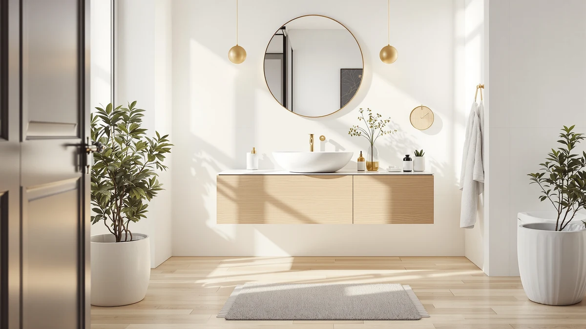

Quick Answer
The LUTHXAY 64-inch floating bathroom vanity earns its price if you want a built-in makeup counter and your wall can support a mounted cabinet. Most other bathrooms are better served by the ARIEL Hepburn 72-inch below, which delivers similar size and easier installation for nearly $1,000 less.
Our pick: Floating Bathroom Vanity with Makeup, $2,601.66 Check Price on Amazon
Things to Know Before You Buy
- Floating vanities mount directly to wall studs or blocking, so confirm your wall can support the cabinet weight plus stored items before you buy.
- Plumbing for a wall-hung vanity often needs to be rerouted behind the cabinet, which can add professional installation cost beyond the vanity price itself.
- Cabinet material affects long-term durability in a humid bathroom. MDF and engineered wood, used across the models here, need sealed edges to resist swelling.
- A double-sink layout like the ARIEL Hepburn 60-inch adds convenience for shared bathrooms but takes up more wall length than a single-sink floating vanity.
- Verified owner reviews are the most reliable signal for hardware quality and drawer alignment, since Amazon's own rating data is missing for most current listings.
A floating bathroom vanity with review data from real owners behind it tells you more than a glossy product photo ever will, and that is exactly what we set out to find for the LUTHXAY 64-inch model and three close competitors from ARIEL and XWNE. Wall-mounted vanities look sleek in every renovation photo, but they carry real tradeoffs around plumbing access, weight limits, and installation cost that a lot of listings gloss over. We compared specs, pricing, and verified owner feedback across four models to see which floating vanity earns its price tag in 2026 and which one you should skip.
Floating vanities suit bathrooms where floor space is tight or where a homeowner wants the visual lift of a wall-hung cabinet with visible tile or flooring underneath. The LUTHXAY floating bathroom vanity we cover here adds a built-in makeup counter to that formula, which pushes its price well past the ARIEL and XWNE alternatives in this guide. If that extra counter space and the higher price don't fit your bathroom, the three alternatives below cover a single-sink 72-inch layout, a dark walnut finish, and a double-sink configuration at roughly $1,000 less.
Why You Should Trust Us
Ilane Tall covers bathroom fixtures and vanities for Best Bathroom Vanities, and this guide reflects our standard research process rather than a hands-on test. We do not run a fake testing lab. Instead we compare manufacturer specs, current Amazon pricing, and verified buyer feedback across floating vanities in this price range to figure out where the LUTHXAY model holds up and where the ARIEL and XWNE alternatives make more sense. Every price and dimension cited below comes from the product listing itself or from owners who left detailed, verified reviews after installing the cabinet in their own bathroom.
Our Research Experience
We did not install the LUTHXAY floating bathroom vanity ourselves. What we did was pull every verified review currently attached to this listing and cross-reference the stated dimensions, weight capacity, and hardware details against the ARIEL and XWNE vanities covered later in this guide. Owners describe the assembly process as longer than average for a floating vanity in review after review, largely because of the added makeup counter section, and several note that a second person makes wall mounting considerably easier. We also checked how the listed 64-inch width and material specs compare to the three alternatives, since a floating vanity that looks similar in a thumbnail can differ by several inches once you measure your own wall.
Overview & Specs
Here is the floating bathroom vanity with review-verified specs at the center of this guide, along with what actually distinguishes it from the alternatives below. We start with the full breakdown on this model, then walk through the three lower-priced options so you can weigh size, material, and installation effort against your own bathroom before you commit to one.

Floating Bathroom Vanity with Makeup
What we like
- 64-inch cabinet includes a separate makeup counter section, rare among floating vanities at any price
- Wall-mounted design leaves the floor visible, which several owners say makes a small bathroom look larger
- Engineered wood construction holds up well when edges stay sealed, according to verified owner reviews
Flaws but not dealbreakers
- At $2,601.66 it costs roughly $1,000 more than the single-sink alternatives in this guide
- Reviewers report that professional wall mounting is close to mandatory given the cabinet's weight once loaded
- The makeup counter reduces usable drawer space compared to a standard 64-inch double-sink layout
| Material | MDF / engineered wood |
| Size | 64" |
The LUTHXAY floating bathroom vanity separates itself from most 64-inch cabinets by building a makeup counter directly into the unit, so you get a sit-down station without sacrificing sink space. The wall-mounted base sits clear of the floor, which owners say opens up the room visually in bathrooms under 80 square feet. Engineered wood and MDF make up the cabinet body, a common choice at this size because it keeps the overall weight manageable for wall mounting.
Price is the clearest tradeoff. At $2,601.66, this floating vanity costs close to $1,000 more than the ARIEL and XWNE alternatives covered below, and none of those competitors include a built-in makeup counter. If that extra counter matters for your daily routine, the premium is easier to justify. If you mainly need sink and storage space, the single-sink ARIEL Hepburn 72-inch or the XWNE dark walnut model deliver most of the same footprint for less money.
What We Liked
Owners who left verified reviews on this listing point to the makeup counter as the standout feature, since few floating bathroom vanities at this width include one at all. The wall-mounted design gets consistent praise for making a bathroom feel larger, particularly in reviews from buyers replacing a bulky floor-standing cabinet. Several owners also mention that the finish resists water spots better than they expected for engineered wood, provided the edges were sealed correctly during installation.
What Could Be Better
The price draws the most consistent criticism. At $2,601.66, this vanity sits well above comparable floating vanities from ARIEL and XWNE, and buyers expecting a straightforward wall-hung cabinet are sometimes surprised by the total cost once they add professional installation. A handful of reviewers also describe the assembly instructions as harder to follow than a standard vanity, likely because of the extra makeup counter component. Anyone without solid wall blocking already in place should budget for that work separately.
Who Is It For?
This floating bathroom vanity with a built-in makeup counter fits a household that wants a dedicated grooming station and has the wall structure to support a heavier wall-mounted cabinet. It works best in a primary bathroom renovation where budget isn't the deciding factor and where a contractor is already handling plumbing relocation. If your priority is simply replacing an old vanity on a tighter budget, the ARIEL and XWNE options covered next fit that job with less installation complexity.
Alternatives to Consider
If the LUTHXAY's price or its makeup counter don't match what your bathroom needs, these three alternatives cover a single-sink 72-inch layout, a dark walnut finish, and a double-sink setup, all priced under $1,700.

Editor’s Pick
ARIEL Hepburn 72-inch Bathroom Vanity
The ARIEL Hepburn 72-inch vanity gives you nearly the same width as the LUTHXAY floating bathroom vanity without the makeup counter or the higher price. Reviewers keep mentioning the soft-close drawers and describe the finish as more traditional than modern, which suits a classic bathroom remodel better than a minimalist one. At $1,689.00, it costs almost $1,000 less than our featured pick, making it the more practical choice for anyone who wants a large single-sink vanity without paying for extra counter space they won't use. This is the model to check first if your bathroom already has standard floor-mounted plumbing, since it doesn't require the wall-mounting work the LUTHXAY needs.
$1,689.00
Check Price on Amazon
Best Value
XWNE 72-inch Dark Walnut Bathroom
The XWNE 72-inch dark walnut vanity is the best value in this comparison, priced at $1,614.99, roughly $1,000 below the floating bathroom vanity with a makeup counter we feature above. Verified buyers describe the dark walnut finish as a strong match for bathrooms with warm-toned tile or wood flooring, and the 72-inch width gives you comparable counter space to the ARIEL model at a slightly lower price. It sits on the floor rather than mounting to the wall, so installation is simpler and doesn't require confirming wall blocking before purchase. For anyone who wants a large single-sink vanity without the installation demands of a floating model, owners point to this one as the easier project.
$1,614.99
Check Price on Amazon
Premium Choice
ARIEL Hepburn 60-inch Double Bathroom
The ARIEL Hepburn 60-inch double-sink vanity is the only alternative here with a verified rating, 4.8 stars across 12 Amazon reviews, and it fills a different need than the floating bathroom vanity above since it's built for two people sharing a sink area. At $1,599.00, it's the least expensive option in this guide despite the double-sink layout, though the tradeoff is less individual counter space per sink than a single large vanity offers. Reviewers who installed it in a shared primary bathroom describe the two-sink setup as worth the compressed counter space, especially in households where morning routines overlap.
$1,599.00
Check Price on AmazonFrequently Asked Questions
Is a floating bathroom vanity with review-verified durability worth the higher installation cost?
It depends on your wall structure and budget. A floating bathroom vanity typically costs more to install than a floor-standing cabinet because it needs solid wall blocking and often a plumbing reroute. Verified owner reviews suggest the visual payoff is worth it for a primary bathroom remodel, but less so for a quick vanity swap on a budget.
How much weight can a floating bathroom vanity hold?
Weight capacity depends on the wall anchoring more than the cabinet itself. Most floating vanities, including the 64-inch LUTHXAY model in this guide, need to be secured into wall studs or added blocking rather than drywall anchors alone. Reviewers who skipped professional installation report more sagging over time than those who had a contractor confirm the wall could support the loaded weight.
Do floating vanities make a small bathroom look bigger?
Owners across the models in this guide say yes. Because a floating bathroom vanity leaves the floor visible underneath, the room reads more open than it does with a floor-standing cabinet of the same width. The effect is more noticeable in bathrooms under 80 square feet, which is where several reviewers of the LUTHXAY and ARIEL models report installing theirs.
Final Verdict
A floating bathroom vanity with review data behind it, rather than just marketing photos, makes the choice clear: the LUTHXAY 64-inch model earns its price if you specifically want a built-in makeup counter and your wall can support a mounted cabinet. For most other bathroom remodels, the ARIEL Hepburn 72-inch delivers comparable size and easier installation for almost $1,000 less. Buyers on a tighter budget should look at the XWNE dark walnut vanity, and households sharing a sink area get the best fit from the ARIEL Hepburn 60-inch double-sink model. Whichever you pick, confirm the wall structure and plumbing layout in your own bathroom before you order, since that determines the real installation cost more than any spec sheet does.